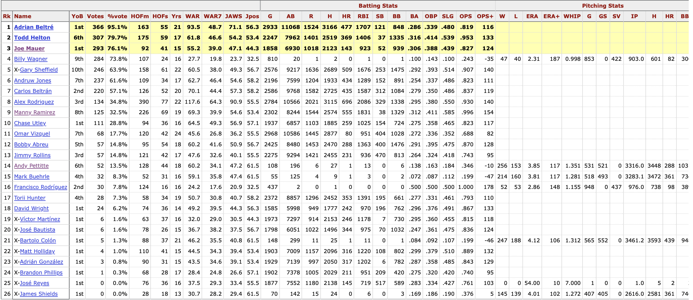
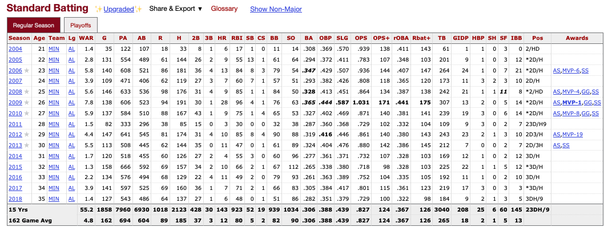
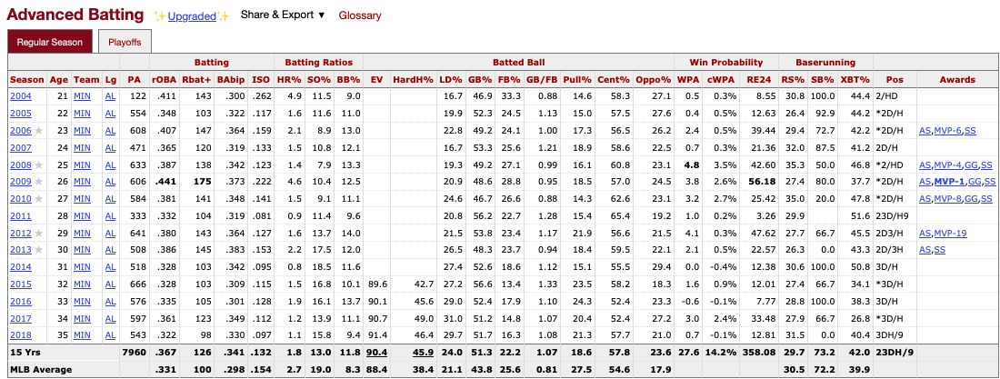
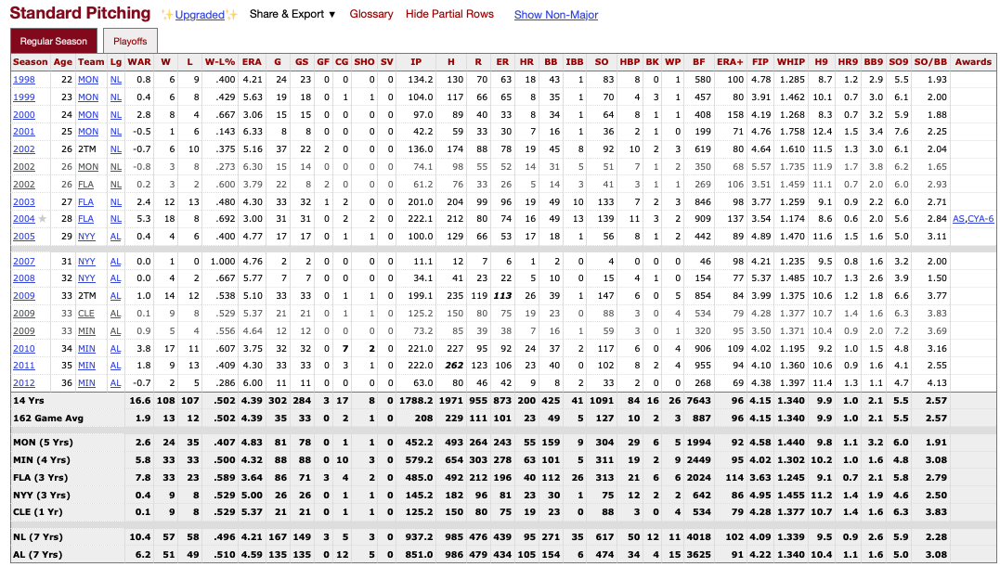
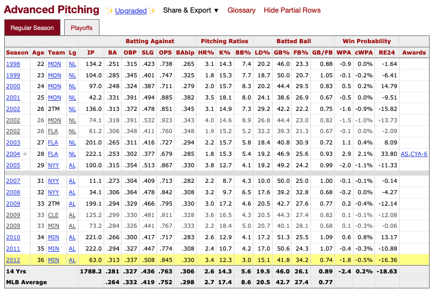
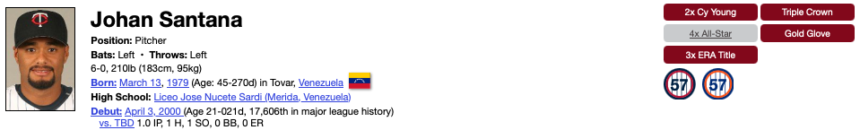

In order to conduct this Hall of Fame analysis, we require a variety of baseball data. We need data on annual Hall of Fame voting to know who has been elected into the Hall as well as annual vote totals for all players. We also require the career and annual stats for these players to understand what stats it takes to make the Hall, but also for every other player who has played in the MLB to conduct further analyses on HOF voting trends.
Thankfully, Baseball Reference has all of the data we need all on their website. Baseball Reference is a baseball encyclopedia for ‘everything’ baseball, including individual player and game stats dating back to 1871, as well as information and data on managers, teams, leagues, The Hall of Fame, in addition to many other baseball topics. With this site available, we collect our data across their webpages, as outlined below:
List of Baseball Reference Webpages for Data Collection:
Hall of Fame Ballot History → A central hub for Hall of Fame voting records. This page provides links to sub-pages for the voting data in each specific year. These sub-pages contain voting data from across the voting methings, such as BBWA and the CBE.
Individual Player Statistics → Baseball Reference provides webpages on an individual player basis for recording both annual and career stats. This central player hub provides all the links to individual player pages.
As outlined above, the Hall of Fame ballot history hub provides central access to each of the annual voting records. Upon reaching any of these webpages, we have full access to the BBWA voting table of interest for the given year:

2024 Hall of Fame Voting Dataset
The dataset is tabular, with each row representing a player up for BBWA voting in the given year. Players are either highlighted yellow representing succesful induction, marked with an ‘x’, representing the end of their BBWA eligibility and unsuccesful induction, or neither, representing an unsuccesful induction, but continued eligibility.
Features include 3 metrics on the player’s vote (year on ballot, number of votes, and vote%), a basic overview of their career stats, both pitching and hitting, and a handful of the previously discussed HOF metrics.
Individual Player Statistics
Similarly to the Hall of Fame voting data, we gain access to individual player stats pages via the central player page. Once a page is accesed, the following data of interest is accesable:
Both standard and advanced metrics are available for batters…
 
…as well as for pitchers
 
Once again, the dataset is tabular, with each row representing a specific season for the player (or subset if they changed teams mid-season). However, at the bottom of each dataset, the aggregate stats for the players career are also presented.
Awards
Finally, in addition to batting and pitching stats, the player pages also offer data on awards/accomplishments from the player’s career. This data can be seen below:

Johan Santana Career Awards
Objectives
Our primary objective is to use Python’s BeautifulSoup to scrape data on the annual Hall of Fame voting data, as well as both the annual and career stats for all current and former Major League Baseball players. Once data collection is completed, we will have three datasets saved:
A CSV file of all Hall of Fame voting data by player and year for all available years
A CSV file of every player to have played Major League Baseball, along with their unique MLB id, which is used for locating their individual stats
A pickle file, containing a dictionary with an entry for each individual player, and 2 values for each player, representing their career batting+pitching stats, and their season by season batting+pitching stats.
Methods
To collect the necessary data from Baseball Reference, we utilize Python’s Beautiful Soup package for webscraping. Thankfully, the underlying data is in a nice tabular format, so the majority of the work can be completed by simply parsing the HTML to find the required tables and cells, before ‘rebuilding’ into DataFrames with Pandas.
To facilitate the webscraping, we develop 2 classes functions to crawl, collect, and save the data for each of our 2 major data origins, individual players and prior Hall of Fame votes. An outline of the two classes can be seen below:
Class Name Name
PlayerScraper
HOFScraper
Main Function #1
scrape_player_info Collects names and IDs for all MLB players
scrape_hof_inductees Collects a list of all players who have been inducted to the Hall of Fame, along with their mothod of induction and final vote total.
Main Function #2
scrape_player_stats Collects the yearly an career batting+pitching stats for a given set of mlb players, along with their career awards
scrape_hof_voting Collects the dataset of all annual BBWA Hall of Fame voting by player and year
Classes
See below for the full underlying PlayerScraper class
Code
import requestsimport timeimport reimport pickle as pklimport pandas as pdfrom bs4 import BeautifulSoup as bsfrom bs4 import Commentfrom IPython.display import clear_outputclass PlayerScraper():def__init__(self, save_csv=True):self.save_csv = save_csvdef scrape_player_info(self, leading_letters = ('A', 'B', 'C', 'D', 'E', 'F', 'G', 'H', 'I', 'J','K', 'L', 'M', 'N', 'O', 'P', 'Q', 'R', 'S', 'T','U', 'V', 'W', 'X', 'Y', 'Z')):# Create storage names = [] suffixes = [] ids = []for letter in leading_letters:# Sleep to remain under rate limits time.sleep(4)# Create the url with the data for all players with a last name starting with the letter letter_url =f'https://www.baseball-reference.com/players/{letter.lower()}/'# Request the url that contains the data for all players belonging to the letter req = requests.get(letter_url) soup = bs(req.text, 'html.parser') player_soup = soup.find_all('div', {'id':'div_players_'})[0]# Grab all names player_names = [name.a.text for name in player_soup.find_all('p')] names = names + player_names# Grab all URL suffixes url_suffixes = [name.a['href'] for name in player_soup.find_all('p')] suffixes = suffixes + url_suffixes# Grab IDs player_ids = [name.a['href'].split('/')[-1].split('.sh')[0] for name in player_soup.find_all('p')] ids = ids + player_ids# Combine everything into a dataframe player_df = pd.DataFrame({'name':names, 'id':ids, 'url_suffix':suffixes})ifself.save_csv:withopen('../../data/raw-data/all_player_info.csv', 'w') asfile: player_df.to_csv(file, index=False)def _scrape_career_batting_or_pitching_stats_from_soup(self, position: str, soup: bs):if position.lower() notin ['pitching', 'batting', 'fielding']:raiseValueError(f"Position {position} is invalid: Must be one of 'batting' or 'pitching' or 'fielding'") is_position =Trueif soup.find_all('div', {'id':f'all_players_standard_{position}'}) elseFalseif is_position:try: # Pull the career standard stats standard_footer = soup.find_all('div', {'id':f'all_players_standard_{position}'})[0].find('tfoot').find('tr', {'id':re.compile(f'players_standard_{position}.')})except (IndexError, AttributeError) as e: # If the table is commented out comments = soup.find_all(string=lambda text: isinstance(text, Comment))for comment in comments:iff'players_standard_{position}'in comment: table_html = bs(comment, 'html.parser') standard_footer = table_html.find_all('table', {'id':f'players_standard_{position}'})[0].find('tfoot').find('tr', {'id':re.compile(f'players_standard_{position}.')})break stat_names = [cell['data-stat'] for cell in standard_footer.find_all('td')] stat_values = [cell.text for cell in standard_footer.find_all('td')] career_standard_stats = pd.DataFrame([stat_values], columns=stat_names)if position.lower() !='fielding':try: # Pull the career advanced stats advanced_footer = soup.find_all('div', {'id':f'all_players_advanced_{position}'})[0].find('tfoot').find('tr', {'id':re.compile(f'players_advanced_{position}.')})except (IndexError, AttributeError) as e: # If the table is commented out comments = soup.find_all(string=lambda text: isinstance(text, Comment))for comment in comments:iff'players_advanced_{position}'in comment: table_html = bs(comment, 'html.parser') advanced_footer = table_html.find_all('table', {'id':f'players_advanced_{position}'})[0].find('tfoot').find('tr', {'id':re.compile(f'players_advanced_{position}.')})break stat_names = [cell['data-stat'] for cell in advanced_footer.find_all('td')] stat_values = [cell.text for cell in advanced_footer.find_all('td')] career_advanced_stats = pd.DataFrame([stat_values], columns=stat_names) total_career_stats = pd.concat([career_standard_stats, career_advanced_stats], axis=1)return total_career_statselse:return career_standard_statselse: # If no data for the positionreturn pd.DataFrame()def _scrape_annual_batting_or_pitching_stats_from_soup(self, position, level, soup):if position.lower() notin ['pitching', 'batting', 'fielding']:raiseValueError(f"Position {position} is invalid: Must be one of 'batting' or 'pitching' or 'fielding") is_position =Trueif soup.find_all('div', {'id':f'all_players_standard_{position}'}) elseFalseif is_position:try: rows = soup.find_all('tr', {'id':re.compile(f'players_{level}_{position}.')}) existince_checker = rows[0]except (IndexError, AttributeError) as e: # If the table is commented out comments = soup.find_all(string=lambda text: isinstance(text, Comment))for comment in comments:iff'players_{level}_{position}'in comment: table_html = bs(comment, 'html.parser') rows = table_html.find_all('table', {'id':f'players_{level}_{position}'})[0].find('tbody').find_all('tr', {'id':re.compile(f'players_{level}_{position}.')})break headers = [cell['data-stat'] for cell in rows[0].find_all('td')] stats_list = []for row in rows: stats = [cell.text for cell in row.find_all('td')] stats_list.append(stats) stats = pd.DataFrame(stats_list, columns=headers) stats = stats[stats[stats.columns[-2]] !=None]return statsdef _scrape_acomplishments_from_soup(self, soup):try: accomplishments_soup = soup.find_all('ul',{'id':'bling'})[0] accomplishments = [accomplishment.text for accomplishment in accomplishments_soup.find_all('li')] accomplishments =', '.join(accomplishments)return accomplishmentsexcept (AttributeError, IndexError) as e:return''def _scrape_position_appearances_from_soup(self, soup): comments = soup.find_all(string=lambda text: isinstance(text, Comment))for comment in comments:iff'div_appearances'in comment: table_html = bs(comment, 'html.parser') footer_row = table_html.find('tfoot') headers = [cell['data-stat'] for cell in footer_row.find_all('td')] stats = [cell.text for cell in footer_row.find_all('td')]break app_df = pd.DataFrame([stats], columns=headers)return app_dfdef scrape_player_stats(self, player_suffixs = (), cache_path =''):try:withopen(cache_path, 'rb') as fpath: storage_dict = pkl.load(fpath)exceptFileNotFoundError: storage_dict = {} save_counter =0for suffix in player_suffixs: insert = suffix.split('/')[-1].split('.')[0]if insert in storage_dict:continue# Wrap everything in a try/except to catch anything unforseen, while still appending to storage dict, so we can go back later if neededtry:# Create the url with the data for all players with a last name starting with the letter player_url =f'https://www.baseball-reference.com{suffix}'# Request the url for the players Baseball Reference page req = requests.get(player_url) soup = bs(req.text, 'html.parser')# Scrape the career batting pitching, and fielding stats career_batting_stats =self._scrape_career_batting_or_pitching_stats_from_soup('batting', soup) career_pitching_stats =self._scrape_career_batting_or_pitching_stats_from_soup('pitching', soup)#career_fielding_stats = self._scrape_career_batting_or_pitching_stats_from_soup('fielding', soup) career_stats = pd.concat([career_batting_stats, career_pitching_stats], axis=1)# Add awards/accomplishments to the career stats accomplishment_list =self._scrape_acomplishments_from_soup(soup) career_stats['accomplishments'] = accomplishment_list##### ANNUAL STATS ###### Scrape the annual batting, pitching, and fielding stats, combining the standard and advanced for each annual_standard_batting_stats =self._scrape_annual_batting_or_pitching_stats_from_soup('batting', 'standard', soup) annual_advanced_batting_stats =self._scrape_annual_batting_or_pitching_stats_from_soup('batting', 'advanced', soup)# Check if the batting stats existed, and if so, merge them into one dfifisinstance(annual_standard_batting_stats, pd.DataFrame): annual_batting_stats = pd.concat([annual_standard_batting_stats, annual_advanced_batting_stats], axis=1) annual_batting_stats = annual_batting_stats.loc[:, ~annual_batting_stats.columns.duplicated()]else: annual_batting_stats = pd.DataFrame()# Get the index of the career column, and get rid of it and anything below (postseason) i = annual_batting_stats[annual_batting_stats.age.str.contains(f'\.') ==True].index[0] ifisinstance(annual_batting_stats, pd.DataFrame) andnot annual_batting_stats.empty andlen(annual_batting_stats[annual_batting_stats.age.str.contains(f'\.') ==True]) >0elselen(annual_batting_stats.index) annual_batting_stats = annual_batting_stats.iloc[:i] annual_standard_pitching_stats =self._scrape_annual_batting_or_pitching_stats_from_soup('pitching', 'standard', soup) annual_advanced_pitching_stats =self._scrape_annual_batting_or_pitching_stats_from_soup('pitching', 'advanced', soup)# Check if the pitching stats existed, and if so, merge them into one dfifisinstance(annual_standard_pitching_stats, pd.DataFrame): annual_pitching_stats = pd.concat([annual_standard_pitching_stats, annual_advanced_pitching_stats], axis=1) annual_pitching_stats = annual_pitching_stats.loc[:, ~annual_pitching_stats.columns.duplicated()]else: annual_pitching_stats = pd.DataFrame()# Get the index of the career column, and get rid of it and anything below (postseason) i = annual_pitching_stats[annual_pitching_stats.age.str.contains(f'\.') ==True].index[0] ifisinstance(annual_pitching_stats, pd.DataFrame) andnot annual_pitching_stats.empty andlen(annual_pitching_stats[annual_pitching_stats.age.str.contains(f'\.') ==True]) >0elselen(annual_pitching_stats) annual_pitching_stats = annual_pitching_stats.iloc[:i]# Merge any annual DataFrames that actually exist. Then drop any duplicated columns real_dfs = [df for df in [annual_batting_stats, annual_pitching_stats] ifnot df.empty] annual_stats = real_dfs[0]for df in real_dfs[1:]: annual_stats = pd.merge(annual_stats, df, on=['age', 'team_name_abbr'], how='outer') annual_stats = annual_stats.loc[:, ~annual_stats.columns.duplicated()]# Drop rows that don't belong on known conditions annual_stats = annual_stats.dropna(subset=['age'])# Scrape appearences appearances =self._scrape_position_appearances_from_soup(soup)# Save everything to our storage storage_dict[insert] = {'career_stats':career_stats, 'annual_stats':annual_stats, 'appearances':appearances}except: storage_dict[insert] ='FAILED TO PULL DATA' save_counter +=1if save_counter %5==0:print(insert)withopen('../../data/raw-data/all_player_stats.pkl', 'wb') as fpath: pkl.dump(storage_dict, fpath) time.sleep(4)
And the HOFScraper Class
Code
class HOFScraper():def__init__(self, save_csv=True):self.save_csv = save_csvdef scrape_hof_inductees(self):'''Function to scrape baseball references Hall of Fame webpage, and collect information on every inducted member into the HOF. Optionally, saves the data as a csv.'''# Pull table for all players inducted to the HOF hof_url ='https://www.baseball-reference.com/awards/hof.shtml' req = requests.get(hof_url) soup = bs(req.text, 'html.parser')### Build out the dataframe, column by column #### Year all_years = soup.find_all('th', {'data-stat':'year_ID'}) years = [int(all_years[n].a.text) for n inrange(1, len(all_years))]# Player Name all_players = soup.find_all('td', {'data-stat':'player'}) players = [all_players[n].a.text for n inrange(len(all_players))]# Living Status all_status = soup.find_all('td', {'data-stat':'lifespan'}) status = [all_status[n].text for n inrange(len(all_status))]# Entrance Method all_entrance_methods = soup.find_all('td', {'data-stat':'votedBy'}) entrance_methods = [all_entrance_methods[n].text for n inrange(len(all_entrance_methods))]# Induction Identity all_identities = soup.find_all('td', {'data-stat':'category_hof'}) identities = [all_identities[n].text for n inrange(len(all_identities))]# Total Votes For, including the if statement in the list comprehension for players induction via 0-vote processes all_raw_votes = soup.find_all('td', {'data-stat':'votes'}) raw_votes = [all_raw_votes[n].text if pd.isna(all_raw_votes[n]) ==FalseelseNonefor n inrange(len(all_raw_votes))]# Vote Percentage, including the if statement in the list comprehension for players induction via 0-vote processes all_vote_percentages = soup.find_all('td', {'data-stat':'votes_pct'}) vote_percentages = [all_vote_percentages[n].text if pd.isna(all_vote_percentages[n]) ==FalseelseNonefor n inrange(len(all_vote_percentages))]# Put all of our data into a dictionary for easy conversion to a Pandas DataFrame conversion_dict = {'voting_year':years, 'player':players,'living_status':status, 'voting_body':entrance_methods,'inducted_as':identities, 'votes':raw_votes,'vote_percentage':vote_percentages}# And finally make the DataFrame hof_df = pd.DataFrame(conversion_dict)# Save as csvifself.save_csv:withopen('../../data/raw-data/all_hof_inductees_table.csv', 'w') asfile: hof_df.to_csv(file, index=False)def scrape_hof_voting(self, years=None):# Build the unique urls for each year's webpagetry: page_urls = [f'https://www.baseball-reference.com/awards/hof_{year}.shtml'for year in years]exceptTypeError:raiseTypeError("Must set the 'years' input of scrape_hof_voting to an iterable object of length at least one")# Create storage for all of our yearly HOF voting tables voting_tables = []# Iterate over each page and scrape the tablefor url in page_urls:# Sleep as to abide by website scraping rules time.sleep(4)# Note the given year year = years[page_urls.index(url)]print(year)# Gather the soup and filter down req = requests.get(url) soup = bs(req.text, 'html.parser')########## SCRAPE THE BBWA TABLE ##########try: # Early on, there was not voting every year, so we need to skip these 'incorrect' URLs bbwa_soup = soup.find_all('div', {'id':'div_hof_BBWAA'})[0]exceptIndexError:try: # Table named differently in 1946 bbwa_soup = soup.find_all('div', {'id':'div_hof_Nominating_Vote'})[0]exceptIndexError:print(f'No Data for {year}')pass bbwa_table = {}# Pull each column in the BBWA table and format into a list for later DF creation rank_boxes = bbwa_soup.find_all('th', {"data-stat":'ranker'}) ranks = [box.text for box in rank_boxes[1:]] bbwa_table['rank'] = ranks name_boxes = bbwa_soup.find_all('td', {"data-stat":'player'}) names = [box.a.text for box in name_boxes] player_page_urls = ['https://www.baseball-reference.com'+ box.a['href'] for box in name_boxes] bbwa_table['name'] = names bbwa_table['player_page_url'] = player_page_urls# After the first two columns, everything is laid our similarly, so we can scrape in a loop data_stats = ['year_on_ballot', 'votes', 'votes_pct', 'hof_monitor', 'hof_standard', 'experience', 'WAR_career','WAR_peak7', 'JAWS', 'JAWS_pos', 'G', "AB", "R", 'H', 'HR', 'RBI', 'SB', 'BB', 'batting_avg','onbase_perc', 'slugging_perc', 'onbase_plus_slugging', 'onbase_plus_slugging_plus', 'W', 'L','earned_run_avg', 'earned_run_avg_plus', 'whip', 'G_p', 'GS', 'SV', 'IP', 'IP', 'H_p', 'HR_p','BB_p', 'SO_p', "pos_summary"]for stat in data_stats: stat_boxes = bbwa_soup.find_all('td', {"data-stat":stat}) stats = [box.text for box in stat_boxes] bbwa_table[stat] = stats# Convert the data from the bbwa table into a pandas df, and add a column for the voting year bbwa_df = pd.DataFrame(bbwa_table) bbwa_df['voting_year'] = year# Append the table to the voting tables dictionary voting_tables.append(bbwa_df)# Combine all yearly voting tables into one dataframe hof_voting_df = pd.concat([df for df in voting_tables])# Optionally, save the df to the data folderifself.save_csv:withopen('../../data/raw-data/yearly_hof_voting_data.csv', 'w') asfile: hof_voting_df.to_csv(file, index=False)
Code
In the following code, we first utilized the requests library to retrieve the HTML content from the Wikipedia page. Afterward, we employed BeautifulSoup to parse the HTML and locate the specific table of interest by using the find function. Once the table was identified, we extracted the relevant data by iterating through its rows, gathering country names and their respective populations. Finally, we used Pandas to store the collected data in a DataFrame, allowing for easy analysis and visualization. The data could also be optionally saved as a CSV file for further use.
# Import general required librariesimport pandas as pdfrom bs4 import BeautifulSoup as bsfrom bs4 import Commentimport re# Create an instance of our HOFScraper classhof_scraper = HOFScraper()# Use the HOFScraper instance to scrape and save all players inducted into the Hall of Famehof_scraper.scrape_hof_inductees()# Next use it to scrape and save all Hall of Fame voting data for all available yearshof_scraper.scrape_hof_voting(years=[year for year inrange(1936, 2025)])# Create an instance of our PlayerScraper classplayer_scraper = PlayerScraper()# Use the PlayerScraper instance to scrape background information and ID on every MLB playerplayer_scraper.scrape_player_info()# And finally, use the instance to scrape annual and career stats, alongside career awards for every MLB player previously scraped
Summary
Challenges
Three major challengs arose during the data collection process. These are commented HTML, request limiting, and changes in HTML formatting.
Commented HTML
While all tables are visually present on the Baseball Reference webpage for individual player stats, tables beyond the standard stats are coded as comments in the HTML. Becuase of this, BeautifulSoup fails to read them in with a simple find_all call. To account for this, we build the try/except blocks into the advanced stats scraping that fall back onto searching within the commented HTML blocks for the given tables.
Request limiting
To project servers, Baseball Reference limits requests to no more than 20/minute. As such, all Baseball Reference scraping code contains a 4 second sleep between requests. While this is not an issue for HOF scraping, there are ~23k baseball players we scrape stats for, resulting in ~25 hours of downtime. With this limitation present, all player data was scraped on a separate mini PC and final data transfered back to the local machine. To optimize collection speed, one could parallelize the collection process across multiple machines, each scraping data for a different set of players, although this is likely not in good faith to the Baseball Reference Terms of Use.
Changes in HTML formatting
For ~9% of individual player stats, the HTML of the Baseball Reference webpage was changes in ways that did not allow our constructed scraping class to retrieve the data. As a result, we do not have data for these players, unless they have been inducted into the Hall of Fame, in which case we have basic batting+pitching stats from their Hall of Fame page. If time permits in a future analysis, we can create different ‘branches’ of our stats scraper to account for these HTML differences on an individual by individual basis and complete the full dataset.
Benchmarks
Aside from the two challenges, all data collection processes went as expected. Additinally, final data collection aligns with ingoing expectations and prior research standards, as MLB data is static history, with a limited universe of commonly used metrics.
Conclusion and Future Steps
Now that the all data has been collected, we can move forward and take a deeper dive into learning about the data we have collected, as we clean it and begin exploring trends as they relate to our primary research question! To see these analyses, toggle to the Data Cleaning and Exploratory Data Analyis tabs of the website.